The issue of noise modelling is essential in any photometric endeavour. Measurement values are next to meaningless if they aren't acompanied by a measure of ther uncertainty.
One can assume that the noise and error modelling only applies to deriving an error figure. This in true only in extremely simple cases. In general, the noise estimates will also affect the actual values. For instance, suppose that we use several standards to calibrate a field. From the noise estimate, we know that one of the standards has a large probable error. Then, we choose to exclude (or downweight) that value from the solution--this will change the calibration, and directly affect the result (not just it's noise estimate).
The accuracy of a measurement denotes the degree to which a measurement result will represent the true value. The accuracy includes the random error of the measurement, as well as the systematic error.
Random errors are in a way the worst kind. We have to accept them and take into account, but they cannot be calculated out. We can try to use better equipment, or more telescope time and reduce them. On the other hand, since random errors are, well, random in nature (they don't correlate to anything), we can in principle reduce them to an aribitrarily low level by averaging a lerge number of measurements.
Systematic errors on the other hand can usually be eliminated (or at least reduced) by calibration. Systematic errors are not that different from random errors. They differ fundamentally in the fact the they depend on something. Of course, even random errors ultimately depend on something. But that something changes incontrollably, and in a time frame that is short compared to the measurement time scale.
A systematic error can turn into a random error if we have no control over the thing that the error depends on, or we don't have something to calibrate against. We could treat this error as ``random'' and try to average many measurements to reduce it, but we have to make sure that the something that the error depends on has had a change to vary between the measurements we average, or we won't get very far.
We will generally talk about ``noise'' when estimating random errors that derive from an electrical or optical noise source. Once these are combine with other error sources (like for instance expected errors of the standards), we will use the term ``error''. Of course, there are two ways of understanding an error value. If we know what the true value should be, we can talk about and actual error. If we just consider what error level we can expect, we talk about an estimated, or expected error.
There are several noise sources in a CCD sensor. We will see that in the end they can usually be modeled with just two parameters, but we list the main noise contributors for reference.
| 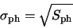 | (A.1) |
For a given readout configuration and speed, these noise sources contribute a constant level, that is also independant of the signal level, usually called the readout noise. The effect of read noise can be reduced by increasing the time in which the sensor is read out. There is a limit to that, as flicker noise will begin to kick in. For some cameras, one has the option of trading readout speed for a decrease in readout noise.
| (A.2) |
Examining the above list, we see that some noise sources are independent of the signal level. They are: the output amplifier noise, camera noise and clock noise. They can be combined in a single equivalent noise source. The level of this source is called readout noise, and is a characteristic of the camera. It can be expressed in electrons, or in the camera output units (ADU).
The rest of the noise sources are all shot noise sources. The resulting value will be:
| 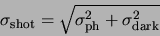 | (A.3) |
| 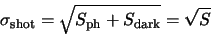 | (A.4) |
| 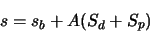 | (A.5) |
Now let's calculate the noise associated with this value.
| (A.6) |
Note that a bias frame will only contain readout noise. By calculating the standard deviation of pixels across the difference between two bias frames we obtain 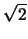 times the readout noise.
A common situation is when one subtracts a dark frame, but doesn't use bias frames.
The noise associated with the dark frame is:
| 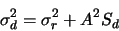 | (A.7) |
| 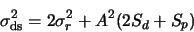 | (A.8) |
| 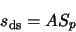 | (A.9) |
| (A.10) |
| 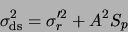 | (A.11) |
| 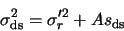 | (A.12) |
To flat-field a frame, we divide the dark-subtracted pixel value 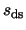 by the flat field
value  . The noise of the flat field is 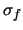. The resulting signal value is
. The noise of the flat field is 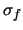. The resulting signal value is
| (A.13) |
| 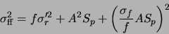 | (A.14) |
| 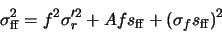 | (A.15) |
We can identify the previous noise parameters, 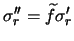 and 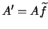. For specifing the effect of the flat-fielding, we introduce a new parameter, .
Without reducing generality, we can arrange for
 . This means that the
average values on the frames don't change with the flatfielding operation, and is a common
choice.
. This means that the
average values on the frames don't change with the flatfielding operation, and is a common
choice.
In this case, and  aren't affected by the flatfielding operation, while the
third noise parameter becomes
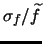, which is the reciprocal of the SNR of
the flat field.
aren't affected by the flatfielding operation, while the
third noise parameter becomes
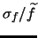, which is the reciprocal of the SNR of
the flat field.
GCX models the noise of each pixel in the frame by four parameters: ,  ,
and
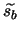. The noise function 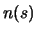 of each pixel
is:
,
and
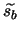. The noise function 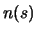 of each pixel
is:
| 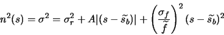 | (A.16) |
Every time frames are processed (dark and bias subtracted, flatfielded, scaled etc), the noise parameters are updated.
Once we know the noise of each pixel, deriving the expected error of an instrumental magnitude
is straightforward. Let 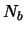 be the number of pixels in the sky annulus, and 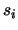 the level
of each pixel. The noise of the sky estimate is:A.1
| 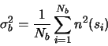 | (A.17) |
| 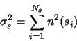 | (A.18) |
| 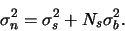 | (A.19) |
Scintillation is an atmospheric effect, which results in a random variation of the received flux from a star. We use the following formula for scintillation noise:
| 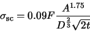 | (A.20) |
Finally, we can calculate the expected error of the instrumental magnitude as
| 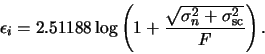 | (A.21) |